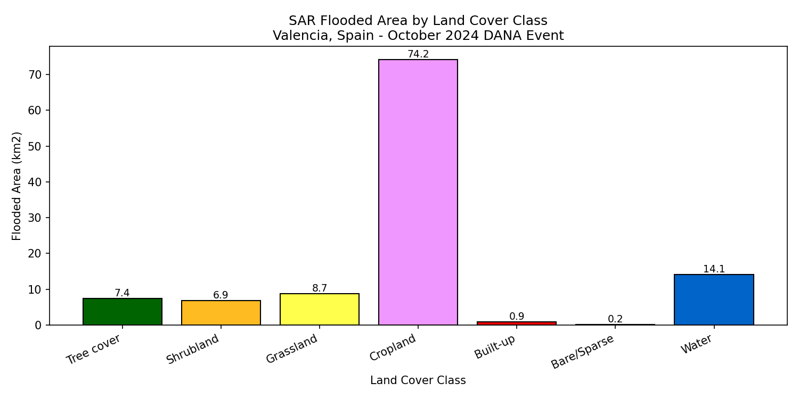
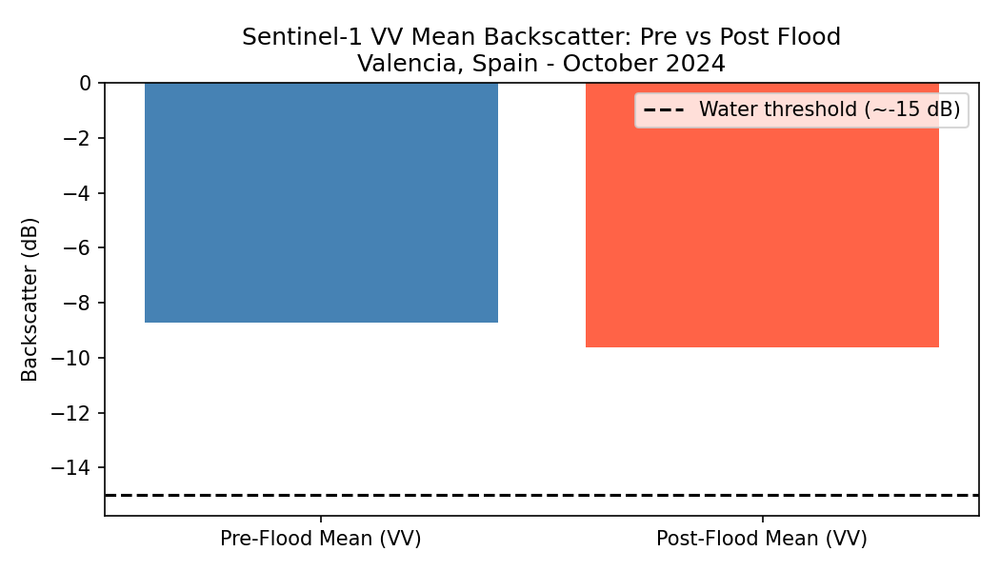
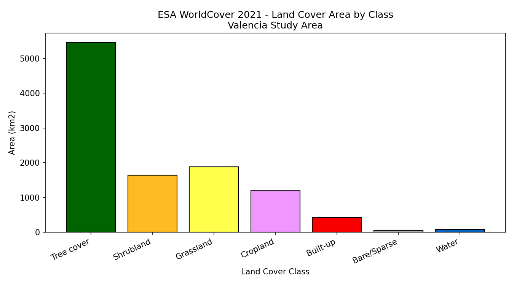
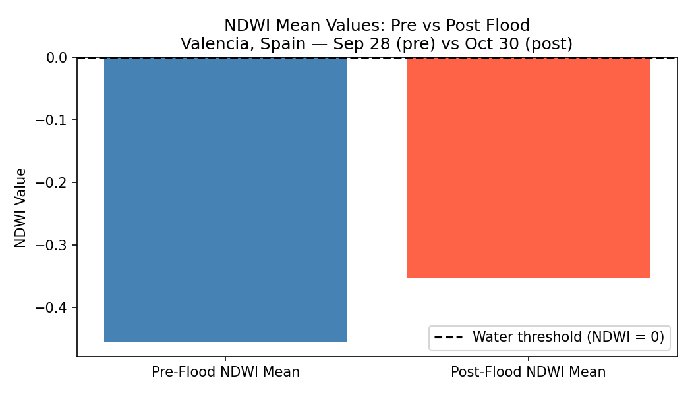
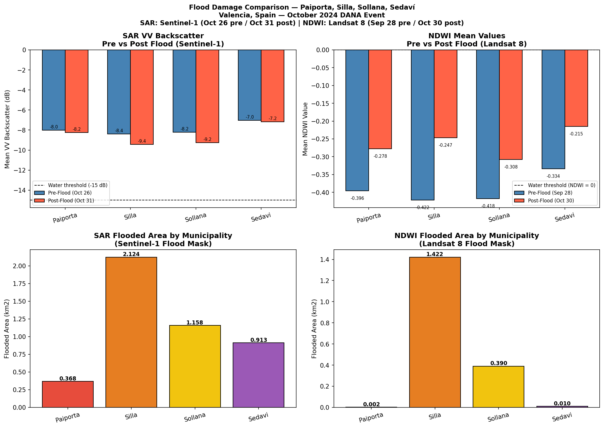
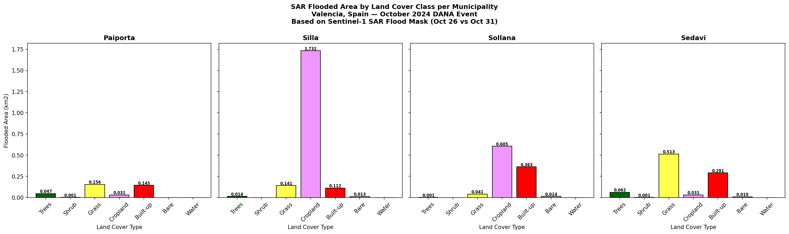

Satellite-based flood extent mapping and land cover damage analysis of the October 29, 2024 DANA event using Sentinel-1 SAR, Landsat 8, and Google Earth Engine.
The October 29, 2024 flood of Valencia, Spain was one of the most catastrophic floods recorded in the region, intensified by climate change. Valencia is located in the Iberian Peninsula along the Mediterranean Sea and is one of Spain's seventeen autonomous communities. The storm produced a year's worth of rainfall in just 8 hours, causing massive flooding that killed 229 people and directly affected over 90,000 residents.
The Valencia DANA — Depresion Aislada en Niveles Altos, meaning upper-level isolated atmospheric depression — highlights the critical need for rapid and accurate flood damage assessment to support emergency response and recovery planning. One of the biggest challenges with mapping floods like this is that traditional satellites are blocked by cloud cover. Sentinel-1 SAR data solves this problem because it can acquire images in all weather conditions, day or night.
This project used Sentinel-1 SAR imagery within Google Earth Engine to map the flood extent across the Valencia region and overlay it with land cover data to identify which areas were most impacted.
The final flood analysis illustrated that cropland took the biggest hit with 74.17 km² flooded — nearly 66% of the total flooded area across Valencia. That matters a lot since so many people depend on this land; losing fertile soil to a flood can set farmers back for years. Valencia produces two-thirds of Spain's orange harvest, making agricultural land loss particularly significant.
When looking at the Sentinel-1 VV band statistics, a clear drop in mean backscatter was visible between October 26 and October 31. The average dropped from −13.53 dB to −14.09 dB — getting much closer to the −15 dB water detection threshold. Water absorbs radar signals and doesn't reflect much back, so flooded areas look darker and have lower backscatter values. This answers Research Question 3: the before-and-after SAR images are clearly different, and that difference is large enough to build an accurate flood map.




Silla was the most flooded neighborhood by satellite detection. Out of 26,557 pixels, 1,580 ended up underwater — almost 6% of the whole neighborhood. Its NDWI jumped from −0.422 before to −0.247 after, a positive change of 0.175. Sollana came in next with 0.390 km² flooded and a Flood Ratio Index of 0.0163. This aligns with Castro-Melgar et al. (2025), who found Silla and Sollana have the highest flood exposure around Valencia.
Paiporta had low flood numbers despite more than 62 people dying there. The Barranco del Poyo ravine overflowed in just 15 minutes, flooding the town with a wall of water and mud at 2,300 cubic meters per second. Because NDWI only picks up open water — not mud — and the flash flood drained quickly before the October 30 Landsat pass, most of Paiporta's devastation didn't show up in the satellite data.


These limitations directly affect how the maps should be interpreted and are important to acknowledge wherever this analysis is shared.
The data used in this project comes from ESA (Sentinel-1, Sentinel-2, WorldCover), NASA and USGS (Landsat 8), and Google Earth Engine. But the people who actually live in Paiporta, Silla, Sollana, and Sedaví are the ones most impacted by this analysis. They had zero input into which neighborhoods were selected, how damage was defined, or what might happen with this notebook in the future.
Carroll et al. (2019) say that communities connected to the land being studied should have a say in how data about their area is collected and used. The biggest risk in this analysis is Paiporta. If a policymaker or insurance company looks at this flood map without examining the damage details, they might move help or money somewhere else. That is a real danger.
This project is FAIR — Findable, Accessible, Interoperable, and Reusable. However, Carroll et al. (2021) point out that FAIR and CARE are not the same thing. A dataset can be perfectly FAIR and still completely fail on CARE if the communities it describes had no say in how it was created or used.
The local government's response was widely criticized. People weren't warned early enough about the flood risk. The public outcry was so strong that President Carlos Mazón resigned in November 2025. This outcome is what the CARE principles warn against when affected communities lack authority to control how data and warnings about their own territories are shared — the consequences can be irreversible.